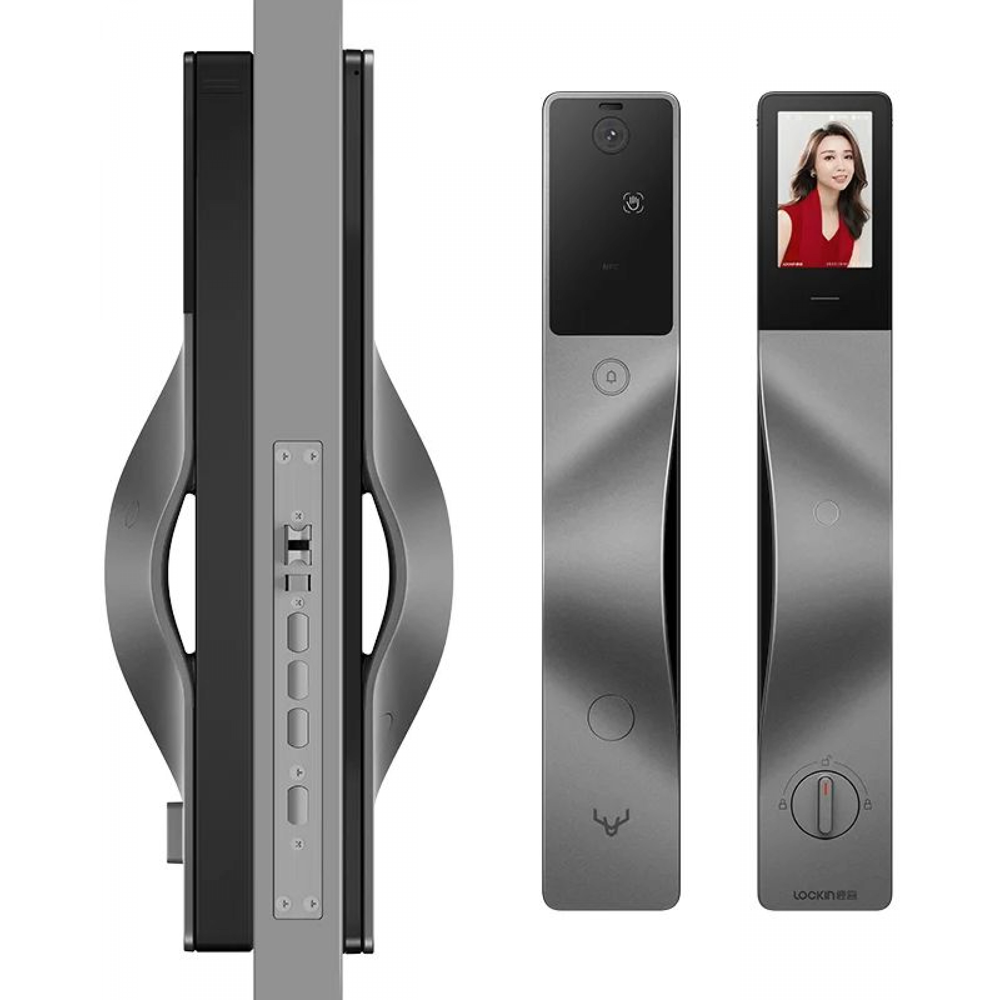
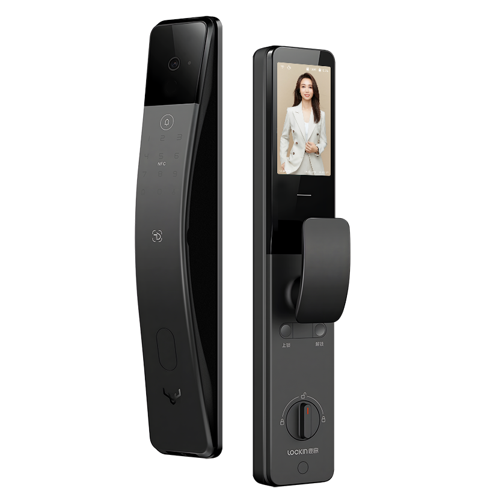

优先推荐

想换指纹锁，先看这把
自如灵之 ZH-B0110
收回房子后想换新锁，先从这款外门指纹锁了解起。
外门智能锁 · 指纹开门
房子收回来了，门锁也想换新？
想换指纹锁，先看灵之 ZH-B0110。也可以看看两款鹿客门锁。
想换指纹锁，先看这把
收回房子后想换新锁，先从这款外门指纹锁了解起。
外门智能锁 · 指纹开门

想选鹿客，看看这一款
偏好鹿客品牌？把 V5Air 作为换新时的第二个选择。
外门智能锁 · 鹿客品牌

自己住，想要更多开门方式
想用指脉、人脸开门，日常使用不依赖自如 App 或额外网关。
外门智能锁 · 指脉与人脸
新换装全系列，均随附一把机械钥匙。
选好后，怎么换？
先确认能不能装，再确认费用。
点产品下方的“了解这把锁”，查看型号与咨询内容。
准备门外、门内和门侧照片，交由服务人员核对适配。
安装条件、费用和服务安排确认清楚后，再决定换装。
先核对旧锁型号、当前状态和交接情况，再确认后续使用条件。若您想直接换新，可从上面三款里选；若想继续用旧锁，可咨询检查与维保。
S6MAX 日常开门无需自如 App 或额外网关；远程视频对讲、远程开门需配置鹿客管家 App 和网络。ZH-B0110、V5Air 的 App、联网及管理条件，请在选购时按实际供货版本确认。
请提供所选型号、安装地区和门体照片，由服务人员核实报价与可安排时间后确认。
可以咨询旧锁检查与维保，或机械锁安装。先说明现有门锁和使用需求，由服务人员核对处理方式。